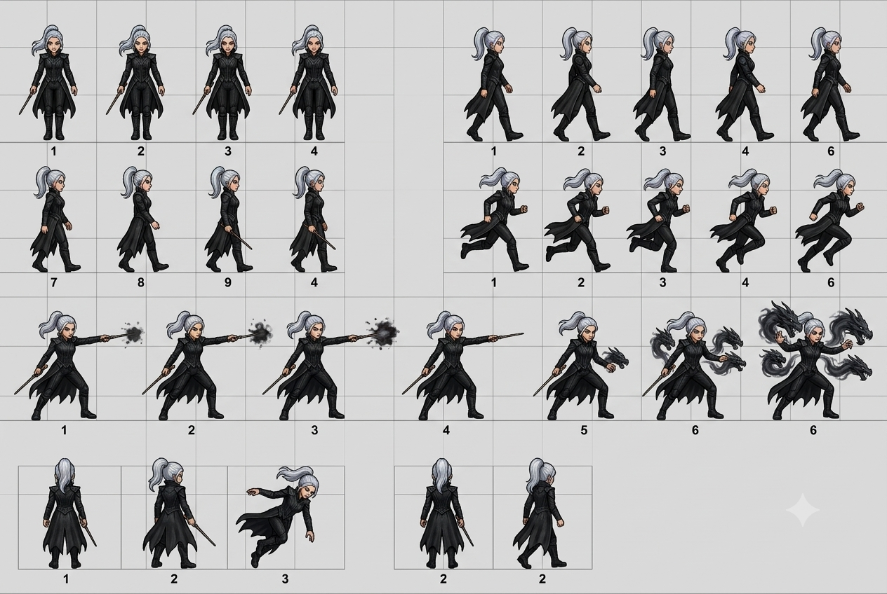
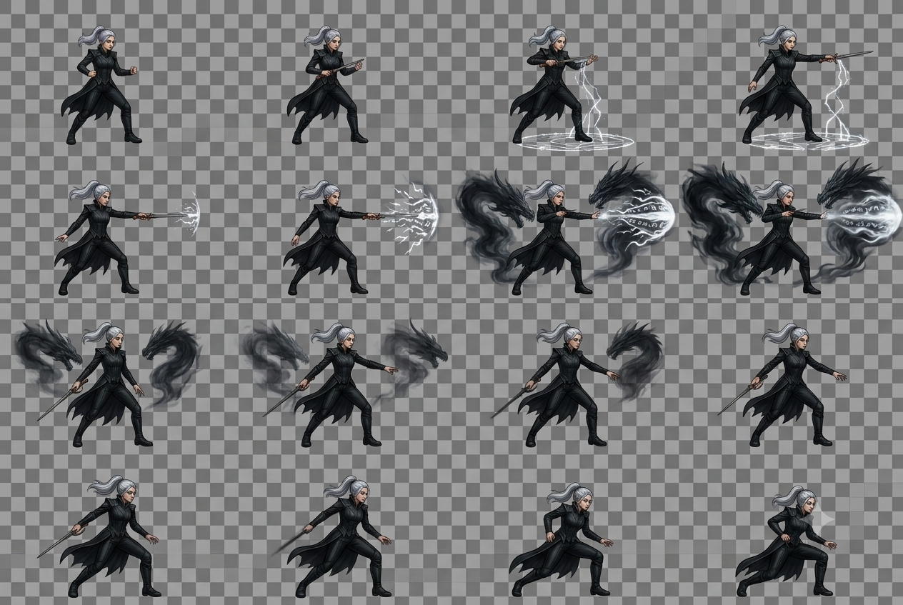
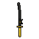
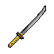
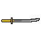
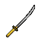
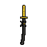
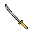
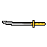
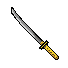

Nota: este documento queda sujeto a modificaciones tanto en la
historia como en las mecánicas a lo largo del desarrollo del proyecto.
1 · Visión del Juego
Plataformas / RunnerPixel ArtDark Fantasy JaponésWeb / PC (GDevelop)Casual
Sinopsis
En el Japón feudal de las sombras, el templo secreto del clan Shinobi custodia el
Pergamino del Equilibrio Gravitatorio, una reliquia ancestral capaz de alterar la
atracción terrestre. Una noche, el clan rival Kuroshini asalta el templo, rompe el
sello sagrado y roba el pergamino. Las fortalezas flotan, los techos se vuelven suelos
y el caos reina.
Kaito, único superviviente del ataque, debe recuperar las hojas del pergamino
antes de que el líder enemigo absorba su poder y destruya la realidad.
Género y plataforma
GéneroPlataformas / Runner por niveles
MotorGDevelop
PlataformaWeb / PC (navegador)
PúblicoJugadores casuales
DuraciónTutorial + 3 niveles
Pilares de diseño
Gravedad como verbo: invertirla es el único poder.
Ritmo: decidir en fracciones de segundo (risk vs. reward).
Bucle de juego (Core Loop): Correr → Invertir gravedad (Espacio)
→ Esquivar / Recolectar → Alcanzar meta o superar récord.
Documento vivo. El GDD es una guía de trabajo y puede modificarse
durante la producción: la historia, la ambientación y las
mecánicas quedan abiertas a ajustes según decisiones del equipo y
limitaciones del motor. Versión publicada en
team35-mjw.vercel.app.
2 · Ficha del Personaje — Kaito
NombreKaito (カイト) — El Caminante de las Sombras
Edad19 años
RolNinja guardián / Protagonista
ClanShinobi (superviviente)
HabilidadManipulación de Cuerpos Gravitatorios — invierte su propia gravedad en tiempo real usando el sello del pergamino. Consume stamina (paralelo al recurso de magia del Mago).
MotivaciónRedimir la caída de su templo y evitar la destrucción de las leyes naturales.
ArmasKatana japonesa (dorso), daga corta (cinto), shuriken hira (bolsa)
Apariencia visual
Traje ninja negro con detalles carmesí, armadura de placas en hombros y torso, protectores metálicos
en antebrazos y piernas, capucha ninja con máscara facial. Katana envainada en la espalda con contrapeso dorado.
Stats de juego
Vida3 corazones (reinicio instantáneo)
StaminaBarra que se gasta al invertir gravedad y correr rápido — equivalente conceptual a la Magia del Mago (Personaje B)
RecargaAutomática lenta + gemas de energía
VelocidadConstante (runner)
Controles
Espacio / ClicInvertir gravedad
← →Ajuste fino (opcional)
EscPausa
3 · Animaciones del Personaje
Sprites en formato 128×128 px, escalables a 32×32 para in-game.
Animaciones diseñadas para leerse a distancia con siluetas simples.
IDLE — 8 frames · loop 1.2s
Respiración calma, katana lista al costado. Se reproduce mientras el jugador no
ejecuta ninguna acción o durante pantallas de espera.
8 frames128×128Loop
Animaciones CAMINAR y SALTAR — en producción. Se agregarán al documento
una vez generadas.
3.5 · Personaje B — Mago (en exploración)
Segundo personaje en fase de diseño. Rol por definir: se está evaluando
si será jugable alterno (elección de clase al iniciar el nivel) o
enemigo/mid-boss del clan Kuroshini. La base de comportamiento y ciclos de
animación es la misma que la de Kaito: idle, walk, jump/dash y un ataque
ejecutable con recurso.
Adaptación cruzada — Kaito vs Mago
Aspecto
Kaito (Ninja)
Mago (en exploración)
Recurso
Stamina — se gasta al invertir gravedad y correr rápido
Magia — se gasta al lanzar hechizos
Ataque
Katana / dash
Proyectil elemental (ver frames de ataque)
Regeneración
Recolectando gemas / con el tiempo
Recolectando cristales / con el tiempo
Silueta
Compacta, oscura, ágil
Alta, capa larga, gestos amplios
Rol posible
Protagonista fijo
Jugable alterno o mini-boss del clan rival
Concept · CAMINAR y poses base
Hoja de referencia de idle, walking y posturas de ataque. Se usará como base para
extraer los frames finales del spritesheet una vez definido el rol.

Concept sheet — 4 filas: idle, walk cycle, ataque con báculo (frontal), ataque cargado (lateral).
Concept · ATAQUE (efectos mágicos)
Secuencia de casteo con efectos elementales (viento / hielo). Este poder se
reemplaza en Kaito por dash de stamina — misma silueta de gesto, sin partículas
mágicas, con estelas de velocidad.

Concept de ataque: 16 frames de casting con proyectil elemental que se disipa al impactar.
Estado del personaje B: concept aprobado, rol y balance en discusión.
La decisión enemy/playable definirá si obtiene stats de progresión o pool de
hechizos con enfriamiento.
4 · Assets del Proyecto
Katana japonesa — 8 rotaciones
Arma característica del clan Shinobi. Sprite rotado en las 8 direcciones cardinales,
listo para orientar en cualquier ángulo de disparo/ataque.

N

NE

E

SE

S

SW

W

NW
Shuriken (Hira-shuriken) — asset extra
Estrella clásica de 4 puntas. Cumple con la consigna: "diseñar otro asset
que sea parte del proyecto". Usado por el enemigo Lanzador de Shurikens y como
proyectil coleccionable de puntaje.
Formato 32×32Pixel Art
Usos in-game
Proyectil enemigo (patrón rítmico de 2s).
Coleccionable de puntaje (+50 pts).
Icono en HUD para conteo de vidas/munición.
5 · Paleta de Colores
Paleta contenida, dark fantasy japonés. Aplicada de forma consistente en fondos,
sombras, detalles metálicos y focos narrativos.
Negro azulado#0F1626 Fondo principal
Azul noche#1E2740 Ruinas · sombras
Dorado viejo#A8802C Bordes · títulos
Marfil#F2EAD3 Texto · UI
Jade tenue#3A6B5A Magia / foco
Carmesí Shinobi#8B1E2B Acentos · sangre · botones
Piedra ceniza#5B544A Plataformas · roca
Ámbar sagrado#C9A04A Gemas · pergamino
Regla de aplicación
Máximo 5 tonos por escena.
Dorado reservado para elementos interactivos y coleccionables.
Carmesí solo para peligro o decisión narrativa importante.
Jade solo cuando aparece el sello del pergamino (evento único).
6 · Camino del Héroe (12 Etapas)
La narrativa sigue el Monomito de Campbell, mapeado a la progresión
Tutorial + 3 niveles.
01Mundo Ordinario — entrenamiento en el templo.
02Llamado — el templo es atacado y el pergamino robado.
03Rechazo — Kaito duda, herido.
04Mentor — el gran maestro le entrega el fragmento central.
05Umbral — cruza el Portal del Equilibrio.
06Tutorial: Patio Distorsionado (Espacio para gravedad).
07Nivel 1: Templo Caótico — gravedad básica.
08Nivel 2: Cueva de Cristal — velocidad y sincronización.
09Nivel 3: Fortaleza de las Sombras — prueba suprema.
10Regreso — huida a máxima velocidad.
11Resurrección — salto de gravedad definitivo.
12Elixir — restaura la gravedad, se vuelve Gran Maestro.
Decisión narrativa final
[ ¿Qué hacer con el Pergamino? ]
|
+----------+----------+
| |
[ A: Restaurar ] [ B: Absorber ]
| |
Final Bueno Final Oscuro
Gran Maestro Guardián Supremo
7 · Mecánicas, Enemigos y Decisiones
Condiciones
VictoriaAlcanzar la bandera del nivel o eliminar a todos los enemigos.
DerrotaColisión con pincho o caída al abismo → reinicio instantáneo.
Recurso: Energía Gravitatoria
Barra que se consume al invertir gravedad. Se recarga sola lentamente o al recoger gemas.
Introduce decisión de ritmo: ¿gasto ahora o guardo para el abismo?
Enemigos
Tipo
Comportamiento
Interacción
Ninja Patrullero
Patrulla izquierda-derecha en plataforma (extensión GDevelop Platformer Enemy Patrolling).
Contacto lateral/inferior = pierde vida.
Archimandrita de las Sombras
Estático en techo o suelo, lanza shuriken/esfera cada 2 s.
Proyectil impacta = daño.
Muro de Caos (Nivel 3)
Pared oscura que avanza desde la izquierda constantemente.
Alcance = game over. Obliga a no detenerse.
Decisiones en tiempo real (Risk vs. Reward)
Ruta
Riesgo
Recompensa
Ruta Alta (techo)
Menos obstáculos.
Sin coleccionables.
Ruta Baja (suelo)
Pinchos, patrullas.
Reliquias y Cristales de Poder (+ final alternativo).
8 · Arte, Efectos y Audio
Estilo visual
Pixel Art minimalista, escala 32×32 en juego.
Dark fantasy japonesa. Fondos pintados semi-realistas detrás.
UI elegante: negro, azul noche, dorado, crema.
Silueta primero — legibilidad a distancia.
Efectos (FX)
Niebla ambiente
Partículas de polvo
Chispas mágicas al invertir gravedad
Brillo tenue en coleccionables
Transición fundido entre niveles
Destello sobre decisiones importantes
Plan de sonido
Evento
Tipo
Origen
Cambio de gravedad
Woosh / impulso corto
GDevelop SFX (sfxr)
Recoger gema
Chime agudo
GDevelop SFX (sfxr)
Muerte / choque
Golpe seco
GDevelop SFX (sfxr)
Victoria
Fanfarria positiva
GDevelop SFX (sfxr)
Música de fondo
Loop chiptune 8-bit
itch.io (free 8bit music)
Ambiente
Viento, ecos, pasos suaves
Freesound / itch.io
Herramientas utilizadas: Piskel (pixel art), Aseprite (frames),
GDevelop (engine), Krita/Photopea (retoque). Assets originales del equipo + shuriken de dominio público.
9 · Galería de Arte Conceptual
Selección de arte conceptual, mockups de nivel y bocetos de personaje generados
durante el brainstorming del proyecto. Estas piezas orientan la dirección visual y
la atmósfera dark fantasy japonesa que persigue el juego.
.png)